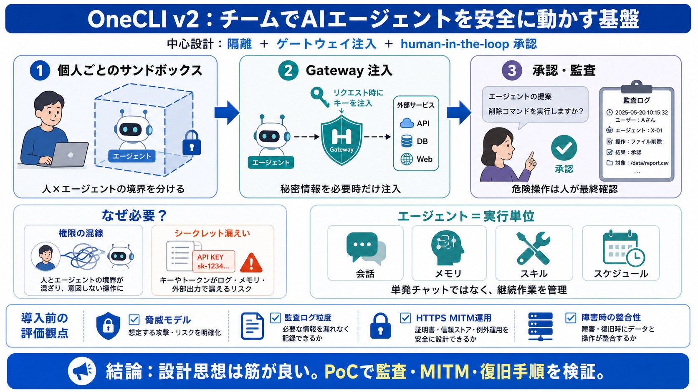

焦点：隔離＋ゲートウェイ注入＋承認（human-in-the-loop）

OneCLI v2 は、企業やチームで AIエージェントを安全に動かすためのオープンソース基盤です。会話・記憶・スキル・スケジュールまで含む“実行単位”を、権限と秘密情報を守りながら統制します。
チームでエージェントを増やすほど、「誰が何を実行できるか」「資格情報をどこに置くか」「安全にホストするには何が必要か」が複雑になります。単発チャットでは済まない運用課題が出ます。
権限の混線（人×エージェント）
個人利用は成立しやすいが、複数人運用では境界が曖昧になりがち。
シークレットの漏えい
APIキー等をどこまで露出させるかが最大リスク。保管と注入の設計が要点。
OneCLI v2 は、各従業員に“個人専用のサンドボックス化エージェント”を用意し、さらにゲートウェイでポリシーと秘密情報を統制する二層構造です。安全の根拠を分散して持ちます。
個人ごとのサンドボックス
混線リスク（データ/権限の交差）を下げる発想。one user → one boundary
ゲートウェイ注入（Gateway）
外向き通信を中継し、必要なタイミングだけ資格情報を注入。エージェント側に見せにくい。
ダッシュボード、APIサーバ、Rust製ゲートウェイ、Runner（サンドボックス監督）などに分かれ、責務を切り分けています。運用と安全の両面で“どこが何を担うか”が見えます。
Webダッシュボード（Next.js）
エージェント作成、会話、メモリ編集、接続管理。
APIサーバ
制御、DB、キューなど。統制の中核側。
Rustゲートウェイ
外向きリクエストを中継し、資格情報注入。HTTPS を MITM で扱う記載。
Runner
アウトバウンドのみでサンドボックス起動・管理（境界運用の担当）。
OneCLI v2 の「エージェント」は通常のチャットAIと違い、“実行単位”として管理されます。会話・記憶・スキル・スケジュールまで持ち、作業を継続できます。
会話（Conversation）
ダッシュボードや Slack 上の履歴で追跡。
メモリ（Memory）
学習・保持（保持範囲は設計/ポリシー次第）。
スキル（Skills）
指示やヘルパーを“手順化”して実行。
スケジュール（Schedule）
将来作業の計画として扱う。
秘密情報（資格情報）は暗号化ストアに保存され、必要なリクエスト時にだけ復号して注入する設計が述べられています。保存時の露出を減らし、注入面を限定します。
AES-256-GCM
保存時暗号化：AES-256-GCM と明記。
リクエスト時に復号
“動的注入”で、エージェントに見せない方向性が強い。
※ 具体の“どのタイミングで復号するか”“復号後のライフタイム（メモリ保持時間など）”は提示情報だけでは確定できません。 （追加確認ポイント）
ゲートウェイは外向きリクエストを中継し、プロキシ認証ヘッダ等でエージェントを認証させます。README相当の情報では HTTPS を MITM で扱う記載があり、ここが運用上の重要論点です。
ポリシー強制（制御点を一本化）
どこへアクセスできるか、どう注入するかをゲートウェイ中心で統制。
HTTPS MITM の運用
証明書配布・検証、監査、誤検知、ネットワークポリシー整合が必要になり得ます。（要評価）
OneCLI v2 は、エージェントに会話・記憶・スキル・スケジュールを持たせ、継続作業を管理対象にします。加えて権限と秘密情報の境界をプラットフォーム側で作ります。
境界が弱い
権限・秘密の扱いは個別実装になりやすく、チーム拡大で破綻しがち。
境界を前提設計
個人隔離＋ゲートウェイ注入＋ポリシー統制で、運用の再現性を狙う。
メール送信やチケット削除、S3バケット空化のような“100%制御が必要”な操作は、チャット上の承認で行う方向性が示されています。自律性より事故抑制を優先します。
メール送信
誤送信の抑止。
チケット削除
不可逆操作の防止。
S3空化
データ消失を人が承認。
b/t：Slack内の承認導線はチームに馴染みやすい一方、承認粒度・監査・復旧は追加確認が必要です。 （日本語/English用語：human-in-the-loop（人間の最終承認））
Slack連携は、エージェントごとにSlackアプリが紐づく前提で説明されています。削除すれば紐づくアプリも消えるため、停止・削除の管理を直感化しようとしています。
エージェント単位のSlackアプリ
ファイルや画像の扱いも含む旨が示される。
削除で紐づきも停止
運用者が“オフ”を作りやすい設計意図。
※ ただし、実際の権限スコープやログ保持方針は提示情報だけでは確定できません。（要追加確認）
提示情報には、監査ログの粒度、脅威モデル、MITM運用の影響、障害時の整合性などが不足しています。導入判断は“思想の良さ”だけでなく、運用と監査の確認が必須です。
脅威モデルと境界
サンドボックス隔離の境界、脱出経路想定、依存コンポーネント管理。
ログと承認の粒度
誰がいつ承認し、何が実行されたか（証跡）を確認。
障害/中断時の挙動
承認済み操作の扱い、キュー再実行の整合。
Runner/サンドボックス安定性
承認フローのUX、監視、復旧（復元）手順。
OneCLI v2 は、チーム運用で避けづらい「隔離・秘密・承認」を中心に据えた安全設計を目指しています。強みを活かすには、MITM運用と監査・障害時の整合を追加で検証し、PoCで実運用を固めるのが近道です。
隔離＋注入＋統制
個人サンドボックスとゲートウェイ注入で、境界を設計に織り込み。
監査・脅威・MITM
ログ粒度、脅威モデル、証明書/ネットワーク整合、復旧手順を確認。
No references found